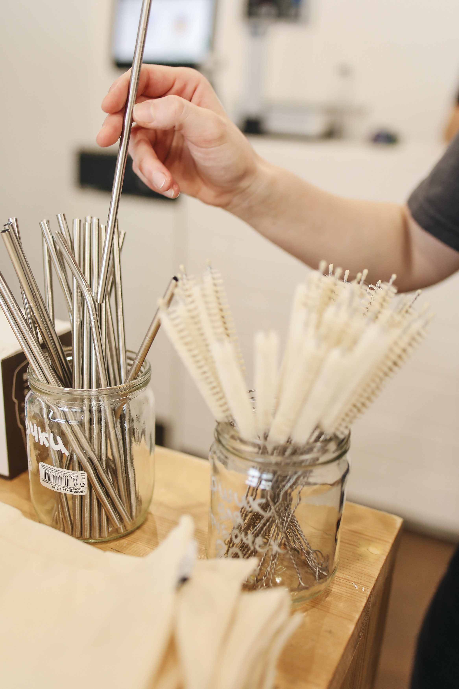
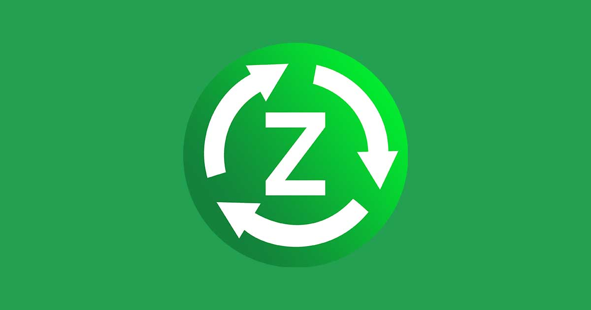
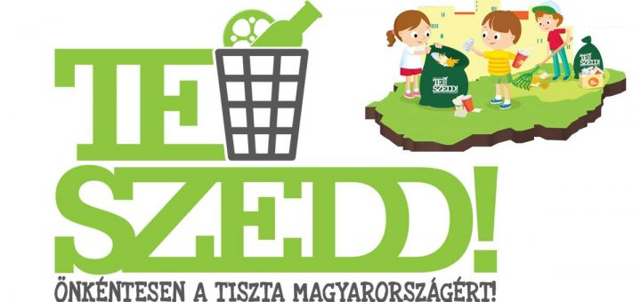
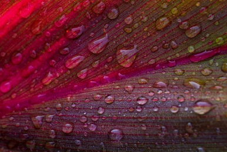
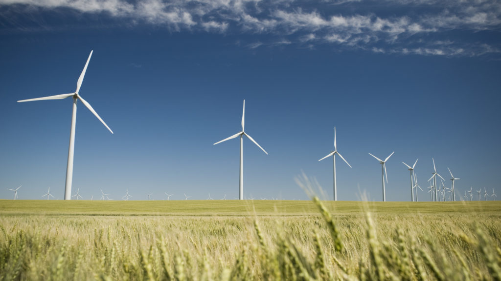

Fenntarthatósági Cikkek
Fenntartható Divat-Hol vásároljak?
Amikor valaki azt kérdezi tőlem, hol vásároljon fenntartható és etikus divattermékeket Magyarországon, akkor csak azt tudom először mondani: a saját szekrényében. A tudatos vásárlás valahol ott kezdődik, hogy kiderítjük, mi az, amink már van. Elkezdjük megismerni a saját ruhatárunkat, mellette pedig önmagunkat is. Ez nem kétperces folyamat, és nem is biztos, hogy megy egyedül.
Magyar divat márkák
Egyre több magyar márka helyez hangsúlyt a divatipar fenntarthatóságára, a környezetbarát munkafolyamatokra, a gyártás átláthatóságára és a méltányos munkakörülmények megteremtésének fontosságára. Lelkiismeretes munkájuknak és a közösségi oldalak hatékony kommunikációnak köszönhetően mára a fogyasztói szokások is változó tendenciát mutatnak. Egyre többen keresik az etikus eljárással, újragondolt szabási technikával, kézzel és helyben készült darabokat az üzletekben.
A lelőhelyek listája nagyon kezdetleges, de ahogy időm engedi, folyamatosan bővítem. A legtöbb tervezővel, alkotóval kapcsolatban is állok, a nagyobb márkák esetén pedig arra biztatlak, ha kérdésed van, írj nekik. Ezek nem fizetett megjelenések, hanem tényleg úgy gondolom, hogy náluk érdemes szétnézni.
5 magyar márka, aki hisz a fenntartható divatban
- Budapest-Select Concept Store
A Budapest Select Concept Store kínálatában is egyre több olyan márka található, akik a kreatív munkafolyamatok során előtérbe helyezik a fenntarthatóságot, olyan darabokat hozva létre, amelyek egyszerre stílusosak, funkcionálisak, klasszikusak és modernek. A magyar márkák számára a fenntarthatóság nemcsak egy jól csengő zöld marketingfogás, hanem életstílus. Eheti válogatásunkban olyan friss magyar márkák kerülnek bemutatásra, akik szem előtt tartják a környezetvédelmet és hisznek a helyben készült termékek vonzerejében.
- ALMA
ALMA-A művészcsaládból származó ALMA saját magát festi meg anyagmintáit is. Kollekcióit hulladékmentes gyártástechnológiával valósítja meg. A számos szakmai díjat elnyert ALMA nemrég a milánói divathéten és a BCEFW-n is bemutatta 2021-22-es őszi-téli kollekcióját, amelyben számos egymással jól kombinálható, időtlen darab található. Ilyen például a Kayla felső is, ami 142,000 forintért kapható a Budapest Select Concept Store kínálatában.
- Zsigmond Dora Menswear
ZSIGMOND DORA menswear-A 2014-ben alapított márka kollekciói a tradíciókból építkeznek, de a 21. század elvárásaihoz igazodva funkcionálisak is egyben. Az újrahasznosításra és környezetvédelemre nagy hangsúlyt fektető tervező kiválóan egyesíti archaikus paraszti kultúra és a magyar folklór elemeit a városi életérzéssel, megalkotva ezzel a modern városi férfi ruhatárát. A márka egyes darabjai a női gardróbba is könnyen beépíthetőek, ilyen például ez a kézzel szőtt, természetes növényi festéssel színezett, egyedi mintázatú ing is, amiért 85,000 forintot kérnek a webshopban.
- DAIGE
DAIGE-A Tóth Melinda által 2013-ban alapított márka célja, hogy darabjaik több évre szóljanak, minőség és formavilág tekintetében időtállóak és elérhetőek is maradjanak. Irányelvük az autentikusság, a fenntarthatóság, a megfizethetőség és a praktikum. A DAIGE gerle madárral díszített pólója egyszerre lezser és nőies, 11,990 forintért rendelhető meg a Budapest Select Concept Store-ból.
- Maison Marquise
Maison Marquise-A klasszikus nőies eleganciát képviselő márka a funkcionális alapdarabok híve, olyan, egymással jól variálható kollekciókban gondolkodik, amelyek könnyen alakíthatóak át a hétköznapi üzleti viseletből elegáns esti megjelenéssé. A hazai gyártásban, helyi varrodában minőségi anyagok felhasználásával készült kollekció egyik alapdarabja az arany betéttel feldobott, oldalt felsliccelt sötétkék maxiruha, amiért 84,000 forintot kérnek a webshopban.
Hulladék mentes vásárlás
Csomagolás nélküli vásárlás Magyarországon
Mára több mint 50 olyan bolt található Magyarországon, amelyben csomagolás nélkül tudunk vásárolni. Ezekben a boltokba a vásárló saját üvegedényekkel, tárolóeszközökkel érkezik, és azokban tudja haza vinni a megvásárlandó termékeket. Ez nagyban elősegíti a hulladék termelés visszafogását.

Magyar példakép
A magyar hulladékmentes mozgalom egyik kiemelkedő alakja Tóth Andi, aki mások inspirálása érdekében létrehozta a Háztartásom hulladék nélkül nevű blogját. A környezetbarát üzletek a fővárosba koncentrálódtak, de emellett az ország számos nagyvárosában és szinte az összes régiójában találni néhány boltot. Nyílt csomagolásmentes bolt Orosházán, Hajdúnánáson és Berettyóújfaluban is.
Mit is találhatunk egy ilyen boltban?
Ezen üzletek általában bio, vegyszerektől mentes, kisüzemben gyártott hazai élelmiszereket árulnak, így számolni kell azzal, hogy a termékek valamivel drágábbak lesznek a megszokottnál. Az élelmiszer mellett számos boltban találkozhatunk kimérős tisztítószerekkel is, illetve általában a hulladékmentes életmód kellékeinek széles választékát is megtaláljuk, mint például vizes palack, textil szalvéta vagy fém szívószál. 
A zöld marketing
Bevezetés
A marketing már a mindennapjaink része, mindenhol találkozhatunk vele és mindig a szemünk előtt van, még ha nem is látjuk, mint egy rejtett reklám. Mindennapunk része, tehát szinte természetessé vált, nem lenne izgalmas és hasznos ezt a természetes dolgot az életünkben zöldebbé tenni?
Téma
Ez a fejlesztés Magyarországon nem elterjedt, viszont a nyugati országok már előszeretettel használják, hiszen a fenntartható út választásával sokat profitálnak és a vállalkozásuk megítélése is javul.
Nagyon fontos, hogy a zöld marketing mögött mindig konkrét, valós környezeti előny álljon. Ilyen lehet egy technológiaváltás, amely kevesebb mennyiségű, vagy könnyebben kezelhető melléktermékeket, hulladékot termel a végtermék mellett. Ilyen lehet egy hathatós kibocsátáscsökkentés, energiahatékonysági beruházások, vagy például megújuló energia felhasználásához napelemek, illetve szélturbinák telepítése.
Ha elvégezzük a tanulmányainkat és indítanánk egy vállalkozást biztos van konkrét elképzelésünk, de legalább valami konkrét ötletünk, mai még kiegészítésre vár. Sok mindenre kell gondolnunk többek között a marketingünkre, de milyen is egy jó marketing? Hát nem egyértelmű? Az modern marketing, ami új és éppen az emberek érdeklődésének középpontjában áll. Gondoltad volna, hogy a vásárlók 49%-a hajlandó többet fizetni egy termékért, ha az környezetbarát? Pontosan ez derül ki a Nielsen globális kutatásából. 
Példa
Valóban sikerülhet ez? Igen! Hiszen például az egyik legismertebb kávézónak a Starbucks-nak is sikerült. Kávét ragadva sokan 5% poliuretán műanyagot tartalmazó eldobható kávéscsészéket választanak, ami megnehezíti az újrahasznosítást és a komposztálást. A Starbucks azonban környezetbarát konténert fejleszt ki, amely 2020-ig megduplázza a csészék újrahasznosított tartalmát és újrafelhasználhatóságát. A cég elkötelezett amellett, hogy 99% -ban etikusan beszerzett kávéval dolgozik, ezzel a kávé a világ első fenntartható mezőgazdasági terméke lesz, és 2025-ig 100 millió kávéfát biztosít a gazdálkodóknak. A Starbucks emellett 10 000 energiahatékony, zöld kiskereskedelmi üzletet is szeretne építeni és működtetni 2025-ig.
PLUSZ érdekességek, alternatívák, lépések a hulladékmentes(ebb) jövőnk felé
Neked is fontos a fenntarthatóság? Rengeteg lehetőséged van tenni a környezetedért. Nagyon fontos ha már egy alternatívát kiváltasz, már azzal is nagyon sokat tehetsz környezeted egészségéért. Hulladékmentes alternatíva az egyszer használatos, eldobható tárgyak helyett:
- Műanyag zacskó helyett vászontáskát használj!
- Elviteles, automatás kávéhoz saját termosz vagy műanyag poharat használni
- PET-palackos italok helyett használj saját kulacsot!
- A zöldségesnél, pékségben használatos leheletvékony kisméretű műanyag zacskók helyett használj zsinóros vászonzsákokat!
- Műanyag fogkefék helyett használj, fanyelű természetes sörtéjűt
- Eldobható műanyag borotvák helyett használj hagyományos fém biztonsági borotvát cserélhető borotvapengékkel.
- Sminklemosó és vattakorongok helyett, használj mosható arctisztító párnákat!
- Műanyag szívószál helyett papír szívószálat használj!
- Műanyag evőeszközök helyett használj fa vagy fém evőeszközöket!
- Mesterséges illatok helyett frissítsd otthonod levegőjét inkább természetes illóolajokkal.
Mi az a TeSzedd!?
 A TeSzedd! Önkéntesen a tiszta Magyarországért akció. Hazánk legnagyobb önkéntes mozgalma. Idén immár kilencedik alkalommal valósul meg. A szemétgyűjtési akció keretében szerte az országban „nagytakarítanak” a TeSzedd! önkéntesei. Azért szervezzük meg ezt a mozgalmat minden évben, hogy közösen megtisztítsuk szűkebb-tágabb környezetünket.
Vízcsepp összművészeti pályázat 2022
 A pályázat a 2022. évi Fenntarthatósági Témahét keretében kerül meghirdetésre. A pályázat célja a diákok szemléletformálása vízhez kapcsolódó művészeti alkotások készítésével. Benyújtható pályázatok: rajz, fotó, szépirodalmi mű, zenemű, képregény, infografika, kisfilm.
A pályázat célja, hogy tudatosítsa a diákok körében a víz mindennapokban betöltött fontos szerepét. A pályázat a diákok vízhez kötődő viszonyát, művészti alkotásokon keresztül kívánja felmérni. A diákoknak egy vízcsepp helyébe kell beleképzelni magukat és arról szabadon választott művészeti alkotást kell készíteni.
Kert-kóstólgató pályázat
A pályázat célja, hogy az iskolás csoportok egy saját tervezésű legalább 1 m2 iskolakertet hozzanak létre. Az iskolakertbe olyan növények ültetését várjuk, amelyek az a fenntarthatóságot szolgálják. Az iskolakert létrehozását dokumentálni kell a tervezéstől a kivitelezésig.
Fenntarthatóság a színházban
Kovács Bea: Zöld út Bizonyítékok a fenntartható színház létezésére
 Az Éghajlatpolitika és előadóművészetek elnevezésű digitális találkozón elhangzott, hogyan segíthet a történetmesélés a példamutatásban: „Az előadások meg tudják mutatni a nézőnek azt, hogy a változás (a környezet védelméért) már elkezdődött, mert léteznek olyan emberek, akik képesek voltak változtatni saját életükön.
Az Éghajlatpolitika és előadóművészetek elnevezésű digitális találkozón elhangzott, hogyan segíthet a történetmesélés a példamutatásban: „Az előadások meg tudják mutatni a nézőnek azt, hogy a változás (a környezet védelméért) már elkezdődött, mert léteznek olyan emberek, akik képesek voltak változtatni saját életükön.
Az erős, jól felépített, a közösségi szellemre ható történetek a tudományos álláspontot is képesek közelebb vinni a nézőhöz, és érthetővé, átláthatóbbá fordítják az (öko)szisztémák kusza, komplex viszonyrendszerét.”
 A Csíki Játékszínben Sándor Anna 2019-es kezdeményezése óta már többen is leszoktak az egyszer használatos sminklemosó használatáról, helyettük mosható textilkorongokat alkalmaznak. A népszerű nagy színészek nyílt felelősségvállalásáról és a színházak által kezdeményezett párbeszédeket is folytatnak a témával kapcsolatban. Illetve a városi színházak olykor segítséget kérnek a kellékgyűjtéshez, megspórolva ezzel a gyártást és az azzal járó költségeket és hulladékot.
A Csíki Játékszínben Sándor Anna 2019-es kezdeményezése óta már többen is leszoktak az egyszer használatos sminklemosó használatáról, helyettük mosható textilkorongokat alkalmaznak. A népszerű nagy színészek nyílt felelősségvállalásáról és a színházak által kezdeményezett párbeszédeket is folytatnak a témával kapcsolatban. Illetve a városi színházak olykor segítséget kérnek a kellékgyűjtéshez, megspórolva ezzel a gyártást és az azzal járó költségeket és hulladékot.
A Marosvásárhelyi Nemzeti Színház Tompa Miklós Társulatának munkatársai nyilvános folyótisztítási akcióban vettek részt, a Radnóti Színház legújabb kiadványa pedig környezetvédelmi okokból csak digitális formátumban jelent meg.

Mára huszonegy tagja van a Zöld Színház Projekt kezdeményezésnek az ország legkülönbözőbb részeiről
Papp Endre (a Zöld Színház Projekt vezetője) világossá teszi, hogy a Zöld Színház Projekt nem hivatott szembemenni a művészeti víziókkal, csupán arra tesz javaslatot, hogy az adott díszletelemet és kelléket honnan szerezzék be.
Színház újrahasznosított papírból
 A színházat alkotó, újrahasznosított papírból álló bálák elsősorban régi magazinokból, újságokból és irodai hulladékokból készülnek. A színház teteje egy használt cirkuszi sátor újrahasznosításával alakítanak ki, melyet bambusszal feszítenek ki. A sátor tetején elhelyezett nyílásnak köszönhetően pedig mesterséges színpadi világításra sincs szükség, a természetes fény elég a nappali előadásokhoz.
A színházat alkotó, újrahasznosított papírból álló bálák elsősorban régi magazinokból, újságokból és irodai hulladékokból készülnek. A színház teteje egy használt cirkuszi sátor újrahasznosításával alakítanak ki, melyet bambusszal feszítenek ki. A sátor tetején elhelyezett nyílásnak köszönhetően pedig mesterséges színpadi világításra sincs szükség, a természetes fény elég a nappali előadásokhoz.
A fenntarthatóság fogalmai

De mit is jelent valójában a kifejezés és miért fontos, hogy foglalkozzunk vele?
A fenntarthatóság fogalma 1987-ben indult útjára, amikor az ENSZ a fenntartható fejlődést melyet azóta leegyszerűsítve fenntarthatóságnak is nevezünk a következőképpen definiálta: fejlődés, amely „anélkül elégíti ki a jelen szükségleteit, hogy veszélyeztetné a jövő generációk lehetőségét saját igényeik kielégítésére”. Azaz fenntartható például az a fejlődés, melynek során nem használunk fel minden, korlátosan hozzáférhető nyersanyagot vagy nem szennyezzük be visszafordíthatatlanul vizeinket.

Mint a fenntarthatóság egészével, úgy magával a definíció értelmezésével, gyakorlatba ültetésével kapcsolatban sem teljes az összhang a témával foglalkozók között.
Ennek fő oka, hogy az ENSZ által meghatározott definíció kellően általános ahhoz, hogy szabad teret engedjen a konkrét célok, valamint a célok elérését biztosító eszközök meghatározásának.
A zéro összegű játék hívők
Sok környezeti szakértő számára például a fenntartható fejlődés alapvetően egyfajta oximoronnak (önmagában való ellentmondásnak) tekinthető, hiszen a környezet befolyásolása nélkül nem képzelhető el fejlődés.

Ők úgy gondolják, hogy a gazdaság az emberi társadalom, a társadalom pedig a bioszféra (azaz a földi élet tere) egyik alrendszerének tekinthető, és ezek együttműködése zéróösszegű játék: amit az egyik nyer, az szükségszerűen veszteséget jelent a másik számára, miközben az ökoszisztéma (az élőlény-közösségek és élőhelyeik összessége) valamely összetevőjének túlzott használata drasztikus hatással van az ökoszisztéma egészére.
A win-win hívők
A fenntarthatóság lényege azonban sokak szerint éppen a nyertes-nyertes (win-win) lehetőségek kiaknázása, az olyan eszközök és megoldások megtalálása és alkalmazása, amelyekkel a társadalom és a környezet egyaránt jól jár, és amelyek révén akár évtizedek múlva is összhangban élhetünk a környezetünkkel.
Ebben a megközelítésben a fenntarthatóság összetett jelenség. Egyrészt tényszerűséget és tudományosságot várunk el tőle. Másrészt a fenntarthatóság maga cselekvésre leginkább szokásaink megváltoztatására szólít fel, és így gyakorlati szerepe is meghatározó.
A célok és feladatok értelmezésétől függetlenül és nagyon leegyszerűsítve tehát a fenntarthatóság mindazon fogalmakat és tevékenységeket magában foglalja, amelyek lehetővé teszik, hogy a Földön az élet évtizedek múlva is a maihoz hasonló lehessen.
Bár véleményem szerint ezt egy fajta minimalista megközelítésnek kellene tekinteni hiszen globálisan nézve (bizonyos területeket vagy embercsoportokat tekintve) a mai helyzeten is lehet még javítani , az aktuális gazdasági-társadalmi folyamatokat figyelembe véve azonban már a jelenlegi szint fenntartása is komoly célkitűzésnek számít.
Környezet, azaz "odafigyelés" (környezeti felelősség):
Környezettudatosság, környezet-etikus magatartás, környezetünk védelme, beleértve a klímaváltozással és a tudatos fogyasztással kapcsolatos szempontokat.
Biológiai sokszínűség fenntartása, azaz az állat- és növényvilág védelme.
Természeti erőforrásokkal való fenntartható gazdálkodás, takarékos használat, megújuló energiaforrások használata.
Társadalmi dimenzió, azaz "elfogadás" (társadalmi felelősség):
Fenntartható társadalom: egészségügyi és élelmezési, valamint a túlnépesedésből és az öregedő társadalmakból fakadó társadalmi problémák kezelése.
Szociális igazságosság, esélyegyenlőség, társadalmi különbségek.
Társadalmi sokszínűség, szolidaritás, békés egymás mellett élés.
Gazdasági dimenzió, azaz a "felelős vállalat" megközelítés:
Tisztességes, átlátható vállalati működés, „fair trade”.
Környezeti terhelés csökkentése pl. CO2 kibocsátás minimalizálása és papírmentes iroda révén.
Emberközpontúság mind a kollégák, mind az ügyfelek tekintetében.
Az energiánk 20%-a szélerőművekből fog érkezni
 A szélenergia ipar legalább olyan gyorsan növekszik, mint a napelem ipar, ha nem gyorsabban. Becslések szerint2030-ra globális szinten az energia 20%-a szélerőművekből fog származni.
A technológia ugyan drága, és sokkal nagyobb mértékű beruházásokra van szükség, mint a napelemes befektetéseknél, de a szélenergia hosszútávú előnyei sokkal kecsegtetőbbek. Ha az átállás sikeres lenne az azt jelentené, hogy évente 3,6 milliárd tonnával kevesebb széndioxidot engednénk a levegőbe.
Kína az egyik legkiemelkedőbb vezető ország, ha szélenergiáról van szó. Tavaly 17%-ra növelték a szélenergiából befolyó energia mennyiségét az országban, és jelenleg is további bővítéseket terveznek, még idén. Ezen kívül már született megegyezés abban, hogy 1.000 szénbányát fognak bezárni országszerte, ezzel is elősegítve a megújuló energiaforrásokba történő befektetéseket.
Az jó ügy édekében Kínának és még sok más országnak teljesen át kell alakítania a hálózat infrastruktúráját, hogy teljesen ki tudják használni a megújuló energiaforrásokat.
Óceánok: mi a szerepük az életben, hogyan óvjuk őket?
 Földünk hidroszférájának közel 71 százalékát óceánok borítják. Hatalmas területet fednek le, mégsem kapnak elég figyelmet. Célunk ezen változtatni! Cikkünk szélesíteni kívánja ismereteidet velük kapcsolatban, beutatja, hogy te mit tehetsz védelmük érdekében.
Földünk hidroszférájának közel 71 százalékát óceánok borítják. Hatalmas területet fednek le, mégsem kapnak elég figyelmet. Célunk ezen változtatni! Cikkünk szélesíteni kívánja ismereteidet velük kapcsolatban, beutatja, hogy te mit tehetsz védelmük érdekében.
Milyen szerepet töltenek be az óceánok a Föld életében?
Az óceánok nélkül a bolygó élhetetlen lenne, rengeteg lehetőséget kínálnak a növekedés, a foglalkoztatás és az innováció előmozdítására.
Milyen globális kihívások jelentek fenyegétést az óceánokra jelenünkben?
Sürgős megoldásokat kell találnunk példul a klímaváltozás területén, a rohamos hulladék felhalmozódás ellen, de a sort még folytathatnánk…
Említsünk meg néhány konkrét dolgot:
- A klímaváltozásnak számos káros hatása van az óceánokra.Ilyen példul a hőmérséklet növekedés.
- A bolygónk felmelegedése mögött közvetlenül 93%-ban az óceánok melegedése áll. Mitől is melegszik az óceán? Ezt a jelenséget az üvegházhatású gázok, ezen belül főként a szén-dioxid fokozódó kibocsátása generálja. Ennek következtében egyre több napenergia esik csapdába a légkörben, mely az óceánokba kerülve növeli a víz hőmérsékletét és megváltoztatja körforgását, valamint a sarki jég olvadását eredményezi.
- Az óceánokba futó folyók mellett a parton fekvő települések ipari, mezőgazdasági és kommunális eredetű szennyeződéseivel is számolni kell. A hajók motorjai, szennyvize és a szállított áruk mind tovább fokozzák a szennyezettség mértékét. A vízi közlekedés és szállítás, és az ehhez kapcsolódó balesetek miatt sok olaj kerül a vízbe, ami számos élőlény pusztulását okozza. A légköri ülepedés is szennyezi az óceánok vizét. A szilárd szennyezőkről is szót kell ejteni: az óceánokon hatalmas szemétszigetek alakultak ki, amelyek javarészt a tengerjáró hajók hulladékából, műanyagból tevődnek össze. A Csendes-óceán északi medencéjében található szemétsziget méretét 700 ezer-15 millió négyzetkilométer közöttire becsülik.
- A vízhőmérséklet a tengeri élővilágra drasztikus hatással lehet, a hőmérséklet emelkedése máris nagy változásokat idézett elő a víz alatt, beleértve a tengeri fajok eloszlásának jelentős átrendeződését. Egyes területeken a sótartalom drasztikus növekedése, más közegekben annak csökkenése vezet a fajok kipusztulásához.
Az imént felsorolt változások, illetve problémák az emberek egészségére is hatással vannak: az emelkedő vízhőmérséklet miatt növekedhet a vízzel terjedő betegségek, például a Balti-tengerben fellépő vibriózis fertőzések kockázata is.
Miért jelentenek óriási problémát az óceánokban végbemenő változások?
Az óceánokban végbemenő változások több komponensből összeálló problémát jelentenek. A víz körforgására gyakorolt hatás szélsőséges időjárási körülményeket idézhet elő. Normál esetben ez a körforgás eredményezi a víz folyamatos elosztását az óceánokból a légkörbe, szárazföldre, folyókba és tavakba, majd vissza a tengerekbe és az óceánokba. Az éghajlatváltozás nyomán fokozódik a légkörben található vízgőz szintje, emiatt teljes mértékben kiszámíthatatlanná válik az, hogy milyen mértékű lesz a rendelkezésre álló víz mennyisége. Mindezek a körülmények egyes helyeken heves zivatarokat okozhatnak, más térségekben viszont épp az ellenkező hatást érik el: súlyosbodhat az aszályhelyzet, különösen a nyári hónapok alatt, és ez egyes területeken elsivatagosodáshoz vezethet.
Mi várható, ha minden így megy tovább az óceánokban?
- Ha nem teszünk lépéseket az óceánok felmelegedésének és savasodásának megfékezése érdekében, azt kockáztatjuk, hogy az éghajlatszabályozásban betöltött szerepüket fokozatosan elvesztik, a klíma pedig olyan átalakuláson megy át, hogy az az életkörülmények drasztikus leromlásához vezet.
- Az óceánokban végbemenő változások hatására olvadnak a gleccserek, zsugorodnak a hóval és jéggel borított területek. Felborul a sarkvidéki ökoszisztéma, egyre kisebb térre szorulnak vissza a sarkvidéki állatok és az őslakos emberek. Az olvadás következtében emelkedik a tengerszint, egyre nagyobb területek kerülnek víz alá, mindezek az egymást generáló események pedig az emberi életkörülményeket is ellehetetlenítik: a gazdasági problémák mellett évtizedeken belül a tömeges migrációval is számolni kell.
- A csapadékviszonyok is változnak. Európában a csapadékos térségek még csapadékosabbá, a szárazak pedig még szárazabbá válnak, ugyanakkor egyre gyakoribbak és intenzívebbek az éghajlatváltozással összefüggő szélsőségek, köztük a hőhullámok, az erős esőzések és aszályok. A meleg több halálos áldozattal, valamint növénykultúrákat károsító, és erdőtüzeket okozó szárazsággal jár.
- Az éghajlatváltozás a folyók és tavak átlagos vízhőmérsékletét is fokozatosan növeli, a jégborításos évszakok időtartamát pedig lerövidíti, amely a talajra is káros hatással van: a földben lakozó baktériumok elszaporodnak, a kártevők is szabadabb teret kapnak. E változások jelentősen befolyással lesznek a földművelésre, mezőgazdaságra, és az emberi életminőségre is.
Mi a nemzetközi óceánpolitika álláspontja?
Alapvető változtatásokat kell kieszközölni rövid időn belül az óceánpolitika tekintetében, ha biztosítani kívánják az emberiség jövőjét ezért a nemzetközi szervezetek is felkarolták az óceánok ügyét.
Mit tehetünk az óceánok védelméért?
- Fontos, hogy felismerjük: nem csupán az európai, vagy a nemzetközi szervezetek, politikai nagyhatalmak tehetnek az óceánok ügyéért, hanem mi magunk, személyesen is felelősek vagyunk érte, és egyenként is hozzájárulhatunk a megóvásukhoz, mellyel saját jövőnket is biztosítjuk.
- Mind egyéni, mind közösségi szinten fontos, hogy csökkentsünk a tengereket érő szennyezést, különösen a szárazföldi tevékenységből eredőket, például a tengeri uszadékot, és a tápanyagterhelést.
- A jelentős károsító hatások elkerülése érdekében fenntartható módon kezeljük, és védjük a tengeri és tengerparti ökoszisztémákat, ideértve az ellenállásra és alkalmazkodásra való képességük megerősítését, illetve intézkedjünk helyreállításuk érdekében, hogy az óceánok egészségesek és termékenyek legyenek.
- Elengedhetetlen, hogy a lehető legjobban visszafogjuk az óceán savasodását, és kezeljük annak következményeit, többek között fokozott tudományos együttműködéssel. Ebben az együttműködésben kiemelt szerepet kell biztosítani a sajtóban való megjelenésnek, az ismeretterjesztő programoknak, rendezvényeknek.
- Fontos, hogy a halászat terén is eredményeket érjünk el. A tengeri halászat szabályozása mellett a halállományok helyreállítása is célként kell lebegjen az emberiség szeme előtt, legalább olyan szinten, amely a biológiai tulajdonságaiknak megfelelően a legnagyobb fenntartható szaporulatot hozza. Ennek fényében globálisan be kell tiltani a halászati támogatások bizonyos formáit, amelyek hozzájárulnak a túlzott kapacitások fenntartásához és a túlhalászathoz, felszámolni azon támogatásokat, amelyek hozzájárulnak a jogellenes, szabályozatlan vagy nem bejelentett halászati tevékenységekhez, és tartózkodjunk egyéni szinten, turistaként olyan termékek megvásárlásától, melyek ilyen körülmények között kerülnek ki a vizekből.
- Mindeközben pedig globális és egyéni szinten is támogatni kell a legkevésbé fejlett országok és a fejlődő kis szigetállamok fenntartható halászatra tett törekvéseit, programjait. Ehhez elsősorban a tengeri források fenntartható használatából ideértve a fenntartható halászatból, haltenyésztésből és turizmusból fakadó gazdasági előnyöket kell biztosítani nekik.
- Globálisan, nemzetközi szinten növelni kell a tudományos tudásbázist, fejleszteni a kutatási kapacitásokat, és átadni egymásnak a tengeri technológiákat, figyelembe véve a Kormányközi Oceanográfiai Bizottság „A tengeri technológiák átadásának feltételei és irányelvei” című dokumentumában foglalt előírásait. Ezzel javíthatjuk az óceán egészségét, és növelhetjük azt a hozzájárulást, amit a tengerek fajgazdagsága ad a fejlődő országok, különösen a legkevésbé fejlett országok és a fejlődő kis szigetországok fejlesztéséhez.
Mit tehetsz te személy szerint az óceánok védelme érdekében?
- Tájékozódj, legyél nyitott a nemzetközi, hazai környezetvédelmi szervezetek kommunikációjára, olvass minél több cikket, fórumot a témában, és figyeld folyamatosan a sajtóban az ezzel kapcsolatos híreket, intézkedéseket, szabályokat. Ezen információk segítségével kerüld el azon cégek termékeit, amelyek környezetpusztító módon állítják elő termékeiket, vagy túlhalászattal biztosítják a hal beszerzését.
- Nyaraláskor olyan ajándéktárgyat vásárolj, amiről biztosan tudod, hogy nem úgy állították elő, hogy tengeri állatot gyilkoltak érte. Olyan éttermeket látogass a nyaralás során, ahol fenntartható halászatból készítik az ételeket.
- Olyan halat vásárolj, amiről tudod, hogy fenntartható módon halászták. Itthon, a boltban kapható tengeri halakra ez általában nem érvényes, ezért érdemes hazait fogyasztani, és csak akkor hódolni a tengeri herkentyűk iránti élvezetnek, amikor a tengerparton, óceán mellett vagy. Fontos, hogy folyamatosan tájékozódj arról, hogy a mindennapokban mit tehetünk az óceánokért és mit kerüljünk el.
- Annak, akinek a környezettudatosság fontos szerepet játszik az életében, a kozmetikumok vásárlásánál nagyon körültekintőnek kell lennie: sok szempontból fontos, hogy az adott termék mit tartalmaz. Egyes szépítkezőszerekhez például olyan, veszélyeztetett fajokat használnak fel, mint a csikóhal. Ha tengerhez, vagy óceánhoz valamilyen formában kapcsolódó cég vezetője vagy.
- Fordíts a nemzetközi jog érvényesítése és végrehajtása által fokozott figyelmet az óceánok és erőforrásaik megőrzésére, és fenntartható használatára az ENSZ Tengerjogi Egyezménye előírásainak megfelelően ahogy arra „Az áhított jövő” című ENSZ-nyilatkozat 158. bekezdése emlékeztet.